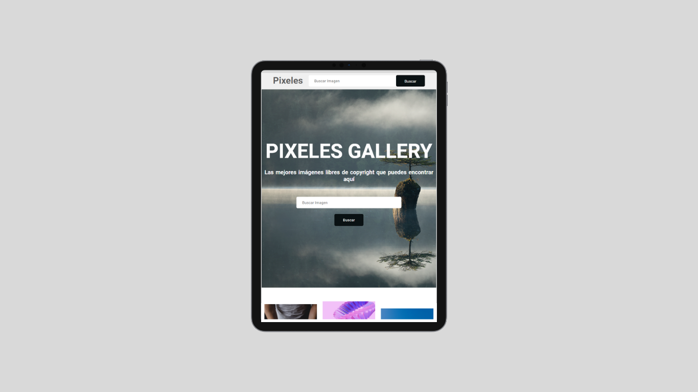

Pixeles Galeria

[Proyecto en actualizacion]
La función principal de esta página es proporcionar a los usuarios una fuente inagotable de imágenes de alta calidad y variadas temáticas. Al cargar la página, se muestra automáticamente una imagen aleatoria obtenida a través de la API, similar a lo que encontrarías en plataformas populares como Pixabay o Unsplash.
La página cuenta con una interfaz limpia y moderna, cuidadosamente diseñada utilizando HTML y CSS. Además, he aplicado técnicas de diseño responsivo para garantizar que la página se adapte perfectamente a diferentes dispositivos y tamaños de pantalla, brindando una experiencia visual óptima tanto en ordenadores de escritorio como en dispositivos móviles.
La integración de la API permite que las imágenes se actualicen automáticamente, lo que brinda a los usuarios una experiencia fresca y novedosa en cada visita. Puedes explorar una amplia gama de categorías y temas mediante la generación de imágenes aleatorias con solo hacer clic en un botón o deslizar la pantalla.
Además de la generación de imágenes aleatorias, he implementado funcionalidades adicionales para mejorar la experiencia del usuario. Estas incluyen la capacidad de guardar y compartir imágenes favoritas, así como la opción de descargar las imágenes de forma rápida y sencilla.
Este proyecto me ha permitido poner en práctica mis habilidades en HTML y CSS, así como mi capacidad para trabajar con APIs y datos externos. He disfrutado creando una experiencia visualmente atractiva y funcional para los usuarios, y estoy emocionado de compartirlo como parte de mi portafolio.
Rol Técnico
- HTML
- CSS
- JavaScript
- API